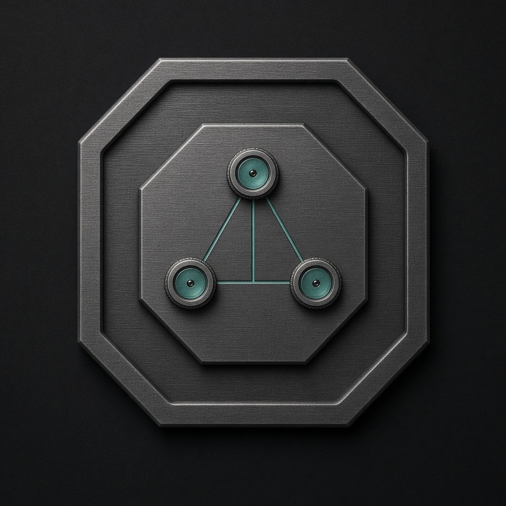

MCP Lab
MCP LabLabDNS · v1.2.0
Authoritative lab DNS with overrides, wildcards, suffix forwarding, bounded chaos, and an embedded operator console. YAML desired state; REST, MCP, and UI on the management plane.
MCP Integration Lab stands up DNS, LDAP, TACACS+, RADIUS, mail, NFS, and HTTP intercept behind a single MCP endpoint. Configuration is YAML and lives in a profile. Runtime state is ephemeral and a restart wipes it.

Three compose projects meet on mcplab-shared. Gateway registration is tmpfs. Profiles are the source of truth.
Each appliance is a real protocol on the wire. Agents talk to the gateway. Testers talk to the data planes.
Authoritative lab DNS with overrides, wildcards, suffix forwarding, bounded chaos, and an embedded operator console. YAML desired state; REST, MCP, and UI on the management plane.
Native Go directory (labldapd) plus a control plane. Real LDAP/LDAPS on the wire, REST, MCP, and a browser UI.
TACACS+ (legacy + TLS 1.3) and RADIUS lab appliance. REST, MCP, and an embedded operator UI.
Receive-only SMTP sink with an inbox UI, maildev /email compat, native /v1, and MCP. Compose service name stays maildev.
Laboratory HTTP(S) intercepting forward proxy with a flow-inspector UI, native /v1, and MCP. Data plane is unauthenticated; HTTPS intercept is :443 only.
Archive-backed userspace NFSv3 export with a write overlay. Empty-root .tar.zst; commits every 15m. NFSv4.1 is in the package; this lab stays on v3.
First-party service directory plus a single streamable-HTTP MCP gateway with tool groups and optional enterprise ACLs.
Docker Engine 24+ with Compose v2.24.4+, GNU make, and Go 1.26+. First run vendors the service repos and builds images.
git clone https://github.com/hilather/mcp-integration-lab.git
cd mcp-integration-lab
make up
make smoke
# url: http://:8080/mcp
# Authorization: Bearer $(cat secrets/mcp-client-token) Remote systems test against this host. Ports live in profiles/.
| Surface | Default | Notes |
|---|---|---|
| DNS data plane | 10053 udp/tcp | 53 collides with systemd-resolved |
| LabDNS REST / MCP / UI | 18080 | /v1 + /mcp + operator console, bearer |
| LDAP / LDAPS | 3389 / 3636 | cleartext binds disabled |
| LabLDAP control | 8443 | REST + MCP + UI, lab TLS |
| MCP gateway | 8080 | streamable HTTP + tool groups |
| TACACS+ legacy / TLS | 49 / 300 | RFC 8907 / RFC 9887 |
| RADIUS access / acct | 1812 / 1813 | udp; Message-Authenticator required |
| TacLab control | 18049 | UI + REST + MCP |
| SMTP / LabMail web | 1025 / 1080 | receive-only sink, MCP on /mcp |
| LabMITM proxy / inspector | 18888 / 18088 | unauthenticated HTTP/1.1 proxy; intercept :443 only |
| NFS export | 20490 | userspace NFSv3, writable overlay, nolock |
| labinfo | 18090 | service-directory MCP |
This repo owns configuration, secrets layout, and gateway policy. The services themselves are vendored or pulled as images.
Laboratory DNS with overrides, wildcards, suffix forwarding, bounded chaos, and an operator console. YAML desired state, REST + MCP. Pinned v1.2.0.
Disposable directory laboratory. Native Go engine (default as of v0.3), REST, MCP, and a browser UI. Pinned v0.4.1. Site.
TACACS+ lab appliance: RFC 8907 + RFC 9887 TLS 1.3, RADIUS, REST/MCP, embedded operator UI. Site.
Native Rust rewrite of ratarmount. Here, an archive-backed userspace NFSv3 export. Pinned v0.1.24.
Receive-only SMTP lab appliance. Inbox UI, /email compat, /v1, MCP. Pinned v1.0.0-rc.3. Compose service name stays maildev.
Laboratory HTTP(S) intercepting forward proxy. Flow-inspector UI, /v1, MCP. Pinned v1.1.1. Data plane is unauthenticated; intercept is :443 only.
Go SDK for the Model Context Protocol. Powers labinfo and is the client generation spoken by the gateway.